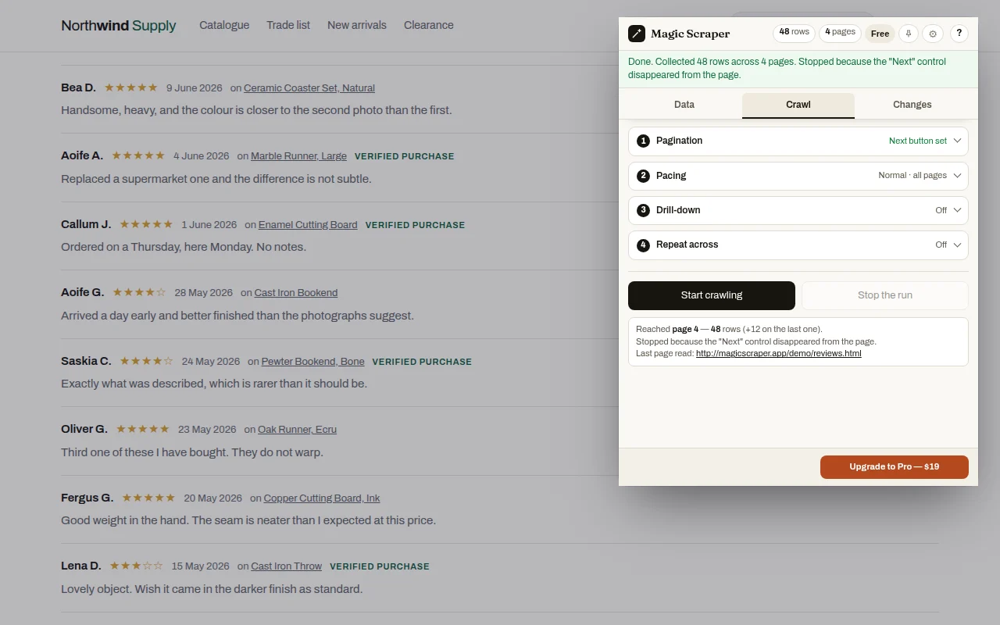

Guide
Stuck on page one? It's usually one of five things.
The run says it finished, the sheet has 20 rows, and the site has 2,000. Stopping at the first page is the complaint people post most about scrapers. The cause is nearly always one of five page patterns, and each has a fix.
Five reasons a scraper stops at page 1
The Next button isn't a link
Many sites draw Next as a button that runs JavaScript, with no address behind it. A tool that only follows links sees nothing to follow.
It's a Load more button
"Load more" and "Show more results" add rows to the same page without changing the address, so a tool waiting for a new page waits forever.
It's infinite scroll
New rows appear only when the page is scrolled to the bottom. Nothing scrolls, nothing loads.
The tool clicked the wrong control
A pager has Next, numbers and Last. Pick Last by mistake and you get page 1 and the final page, and nothing between.
The site pushed back
Ask for pages too fast and a site answers with "too many requests" or a check page. Many tools stop silently and call it finished.
Getting every page
With the extension, on any paginated list.
Open the first page
Open the list or search results and let it finish loading. Click the Magic Scraper icon: the rows are found and shown with named columns.
Press Auto-detect "Next"
On the Crawl tab. It looks for the page's own rel="next" link first, then scores the buttons on the page by their words and position, and handles Load more buttons and infinite scroll as well as page links.
Wrong control? Pick it yourself
Press Pick “Next” manually and click the real Next or Load more button once.
Start crawling
Every page is added to the same table, with a pause between pages. When it ends it says why: no further Next link, the last page, Load more gone, or you stopped it.
Crawling is free and has no page limit. A Max pages box is there if you only want the first few.

Video: Scrape every page, every row, straight to CSV: free Chrome extension. It plays from YouTube when you press play.
When a site says "too many requests"
A site that limits requests answers a fast scraper with a 429 error or a "slow down" page. Magic Scraper waits and retries, and tells you if it had to stop. If a site keeps pushing back, choose Gentle pacing: slower, and the least likely to be blocked. Fast is there only for sites you own or that allow it.
If the site shows a "verify you're human" check, the run stops and hands you the tab. It never tries to get past the check: you can answer it yourself and carry on, or leave the site alone.
Practise on pages built to break scrapers
The sandbox has a catalogue with numbered pages, a Load more list and an infinite-scroll feed, all fictional and none rate-limited, so you can see each pattern work before you try a real site.
Reasonable questions
Why does my web scraper only scrape the first page?
Usually because the Next button runs JavaScript instead of linking to a page, the list uses Load more or infinite scroll, the tool picked the wrong pager control, or the site rate-limited it. A scraper that clicks buttons, scrolls and waits on 429 errors gets past all four.
How do I scrape a page with a Load more button?
Open the page, click the Magic Scraper icon, and on the Crawl tab press Auto-detect Next, or Pick Next manually and click Load more once. Start crawling clicks it until it disappears.
How do I scrape infinite scroll?
The same way: Start crawling scrolls the page and collects new rows as they load, until the page stops adding them.
Is there a page limit?
No. Crawling is free with no page limit. Set Max pages if you want fewer.
Why did the crawl stop early?
The extension says why when it ends: no further Next link, the last page, Load more disappeared, the site asked it to slow down, a human check, or you pressed Stop. Rows collected so far are kept.
What if it finds the wrong Next button?
It finds Next differently: it prefers the page's rel=next link and scores buttons by their words and position, and you can pick the control by hand if it guesses wrong.